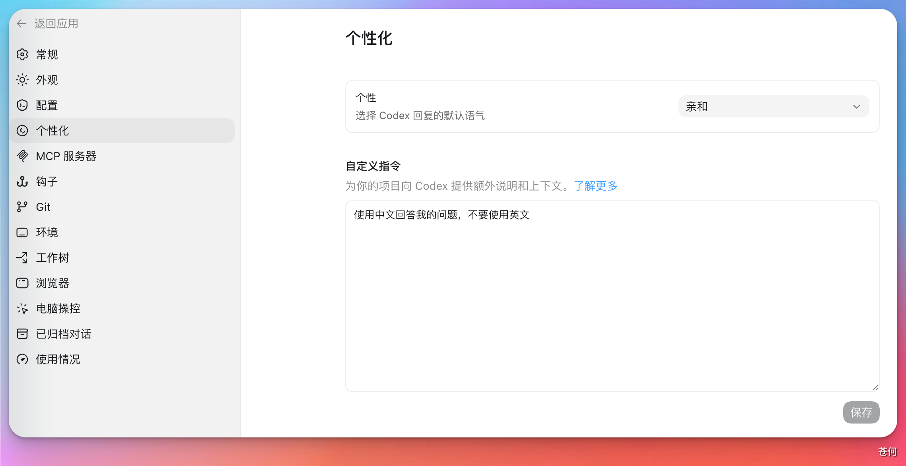

对于 Codex，每次开始新的运行时（在 TUI 中通常是每次启动新会话时），它都会重新构建工作上下文。它不知道这个项目用什么命令、有哪些目录边界、哪些文件不能改，也不知道团队平时怎么验证结果。
AGENTS.md 正是为了解决这类问题而存在的项目级指令文件。它是一个简单、开放的 Markdown 约定，目标是给不同 coding agent 提供一个稳定、可预测的项目指令入口，把项目结构、开发命令、测试要求、代码风格和协作边界显式写下来，减少反复解释。
更准确地说，AGENTS.md 是面向 coding agent 的 README。README 主要给人看，讲项目是什么、怎么上手；AGENTS.md 给 Codex 和其他 coding agent 看，告诉它们改代码前应该遵守哪些项目规则。
可以把它理解为：
- 对个人用户：减少重复解释“项目怎么跑、怎么测、哪些地方不能碰”。
- 对团队项目：把团队共同认可的 agent 使用规则沉淀到仓库里。
- 对多工具环境：让 Codex、IDE agent、CLI agent 等工具尽量读取同一份项目说明。
本质上就是一份普通的 Markdown 文件。
另外需要注意，不同 coding agent 支持的项目指令文件可能不同。例如 Claude Code 通常使用 CLAUDE.md，具体行为应以对应产品的最新官方文档为准。
存放位置与读取机制#
文件位置#
对于普通项目，最推荐的做法是在项目根目录创建 AGENTS.md。Codex 在开始处理任务前会自动读取它，并把内容作为工作上下文带入新的对话。

若希望全局生效，可以撰写 Codex 的全局指令：
- 在 Codex_Home 目录中创建
AGENTS.md。默认位置通常是~/.codex/AGENTS.md；如果设置了CODEX_HOME，则以对应目录为准。 - 在 Codex 桌面 App 里配置个人偏好或自定义指令。本质上也是写入 Codex_Home 的
AGENTS.md，与上述方法等价。
设置全局规则后，它会影响你打开的所有项目；项目级 AGENTS.md 只影响当前仓库。两者作用域不同，要分清。

请确保文件名始终为 AGENTS.md，并确认大小写是否正确。否则 Codex 不会自动识别。
读取顺序与合并规则#
Codex 读取 AGENTS.md 遵循以下顺序：
- 先读取全局规则：默认读取
~/.codex/AGENTS.md。如果同一位置存在AGENTS.override.md，则优先读取它，适合临时覆盖全局规则。 - 然后读取项目规则：进入项目后，Codex 通常会从 Git 根目录开始，一路走到当前工作目录。沿途每一层目录，它会尝试读取项目指令文件。如果无法确定项目根目录，则只检查当前工作目录。
项目指令文件的默认优先级是：
AGENTS.override.md
AGENTS.md也就是说，同一目录里最多只会读取一个指令文件。如果同时存在这两个文件，Codex 会选择 AGENTS.override.md，不再读取同目录的 AGENTS.md。空文件会被跳过。
Codex 会把读取到的指令从上到下合并。根目录的规则先出现，子目录的规则后出现。越靠近当前目录的规则越具体，因此也更适合写局部要求。
一个文件结构的示例：
AGENTS.md
apps/
web/
AGENTS.md
packages/
database/
AGENTS.md上述示例中，根目录 AGENTS.md 写全仓库通用规则，apps/web/AGENTS.md 写前端规则，packages/database/AGENTS.md 写数据库迁移和测试要求。
注意事项：
- 如果你的项目已经有其他规则文件，可以通过 Codex 配置里的
project_doc_fallback_filenames添加备用文件名。Codex 会在找不到AGENTS.override.md和AGENTS.md时，再尝试这些 fallback 文件。 - Codex 还会限制合并后的项目指令大小。官方默认值是
project_doc_max_bytes = 32768，也就是 32 KiB。规则文件太大时，后面的内容可能不会进入上下文，所以尽量保持AGENTS.md精简。
验证与排查#
修改指令文件后，可以运行以下命令，让 Codex 概括当前已加载的指令：
codex --ask-for-approval never "Summarize the current instructions."需要检查子目录规则时，可以指定工作目录：
codex --cd subdir --ask-for-approval never "Show which instruction files are active."如果指令没有按预期生效，可以优先检查：
codex status显示的 workspace root 是否正确。- Codex_Home 或上层目录中是否存在
AGENTS.override.md。 CODEX_HOME是否指向了另一个配置目录。- 指令文件是否为空，或累计大小是否超过
project_doc_max_bytes。
Codex 会在每次新运行或启动 TUI 会话时重新构建指令链，因此修改后重新启动即可，不需要手动清理缓存。
团队协作#
多人协作时，AGENTS.md 适合保存团队共同认可的项目规则；个人路径、本机工具习惯、临时约束和私有工作流偏好，则更适合留在本地。这样团队规则保持稳定，个人习惯也不会被提交到仓库。
使用场景#
下面这些内容适合放在本地私有规则里：
- 本机缓存、SDK、脚本或临时目录路径。
- 个人常用命令、别名、编辑器习惯。
- 只对自己有效的语言风格、回复格式、验证偏好。
- 不方便进入团队文档的临时限制，例如“今天先只做只读分析”。
文件分工#
| 文件 | 作用 | 是否提交到 Git |
|---|---|---|
AGENTS.md |
团队共享的项目规则、命令、边界和交付要求 | 可以提交 |
AGENTS.override.md |
Codex 官方识别的覆盖文件，适合临时覆盖同目录规则 | 通常不提交，除非团队明确约定 |
AGENTS.local.md |
个人本地偏好、私有路径和临时规则 | 应加入 ignore |
需要注意：AGENTS.local.md 不是 Codex 默认识别的标准文件名。如果你想让 Codex 读取它，需要借助 hooks、社区工具（见下方推荐），或在配置中把它加入 fallback 文件名。
无论是否使用本地规则，都应遵守：
- 不把 token、密钥、账号密码写进
AGENTS.local.md。 - 把
AGENTS.local.md和AGENTS.override.md加入全局 gitignore 或项目.gitignore。 - 不在本地规则里绕过团队的测试、审批和安全要求。
- 每次引入 hooks 工具前，先确认它是否会替换命令、执行仓库文件、访问网络或写入敏感目录。
社区工具推荐#
社区工具 codex-agents-local 提供了 AGENTS.local.md 的本地覆盖方案。它通过 Codex hooks 在会话开始或提交提示词时同步本地规则。
安装前建议先让 Codex 审查安装提示词，再决定是否执行：
Read https://github.com/samzong/codex-agents-local/blob/main/INSTALL_PROMPT.md
Follow that prompt in Codex to install codex-agents-local.安装或修改本地规则后，可以用这些命令检查状态：
codex-agents-local doctor
codex-agents-local sync --cwd . --check
codex-agents-local sync --cwd . --json如果还没有安装社区工具，可以先检查 ignore 状态：
git check-ignore -v AGENTS.local.md AGENTS.override.md参考模板#
# AGENTS.md
## 项目概览
- 项目类型：
- 主要语言：
- 关键目录：
- 不要修改的目录：
## 常用命令
- 安装依赖：`...`
- 本地开发：`...`
- 运行测试：`...`
- 类型检查：`...`
- 格式化：`...`
## 代码规范
- 遵循现有代码风格。
- 不做无关重构。
- 新增功能必须补充或更新测试。
## 安全边界
- 不读取或提交 `.env`、密钥和私有凭据。
- 不执行删除生产数据的命令。
- 修改数据库迁移前先说明影响。
## 交付要求
- 说明改动文件。
- 说明验证命令和结果。
- 说明未验证项和剩余风险。最佳实践#
- 多利用市面上已有的、经过无数开发者验证的成熟辅助工具。比如写“运行测试：pnpm test”比写“记得自己检查一遍代码是否有问题”有用。
- 确保没有跟其他规范文档的指令产生冲突。
- 勤于更新。随着项目逐渐推进，里面的命令也需要与时俱进。
AGENTS.md可以承担导航的作用。可以告诉 Codex 项目文档的阅读目录清单，而不是把文档写进AGENTS.md里。- 如果使用 Codex 进行 GitHub Code Review，可以在距离目标代码最近的
AGENTS.md中添加## Code Review Rules。规则应说明需要标记的行为和安全替代方案，纯格式和 lint 检查尽量交给 CI。
下一步#
下一步：Skills 和 Plugins。